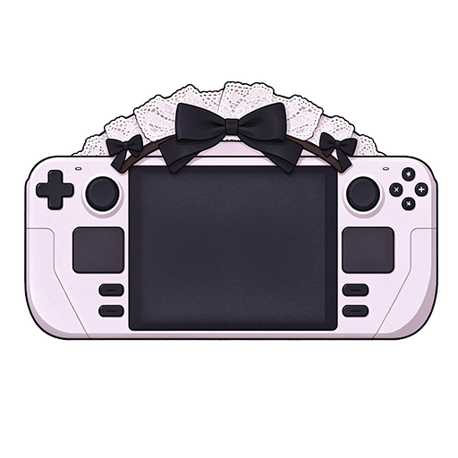

模型接入
填写服务商的接口地址与 Key，保存后立即生效。
女仆人设
决定她是谁、怎么称呼你、用什么语气说话。改完保存立即生效，新会话也保持一致。
长期记忆
记在这里的内容每次对话都会带上，重启也还在。对话里说「记住…」她也会自己记一条； 纠正她的做法（「不对，应该…」）同样会记下来。只记你真想让她长期记住的，写多了会占掉上下文。
人设和上面的记忆就是「她这个人」的全部，导出一个 JSON 就能换机器、重装后恢复。
本地连接
她的权限范围、工作目录，以及其他设备连上这台 Deck 的方式。
远程连接
从别的设备远程使用这台 Deck：跨屏鼠标把电脑上的鼠标键盘接管到这台机器； Onebot 通道让指定的 QQ 发消息下达指令。两项都只在你明确打开后才生效。
在电脑浏览器里点左下角 DeckMeido logo 就进入接管：鼠标从电脑上消失，出现在这台 Deck 上， 能操作 Steam UI、游戏和这个页面。按 Esc、再点一次 logo，或在 Deck 客户端里点 logo 释放。 开关没开时点 logo，会先把你带到这里的开关上。
插件设置
和 Decky 插件端（QAM 快捷面板 / 大屏页）共用同一份后端配置：这里保存后插件端读到的就是新值， 插件端改完回到这里也会显示新值。页面底部的「保存」管开关和表单，提示词模板在卡片里单独保存。
和插件端「截屏询问 / 截屏翻译」是同一份配置。留空保存即恢复默认，默认值由后端下发。
游戏开始运行时自动套用对应预设，退出后恢复默认。预设只覆盖运行时的状态栏提示词， 不会改动上面的全局配置。当前：—
关于更新
版本信息与升级渠道。升级会保留配置、会话与长期记忆。
